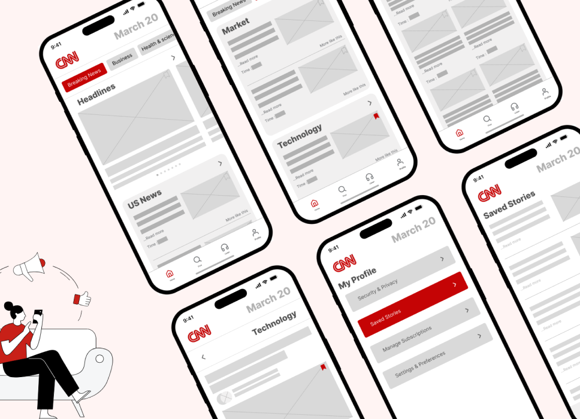
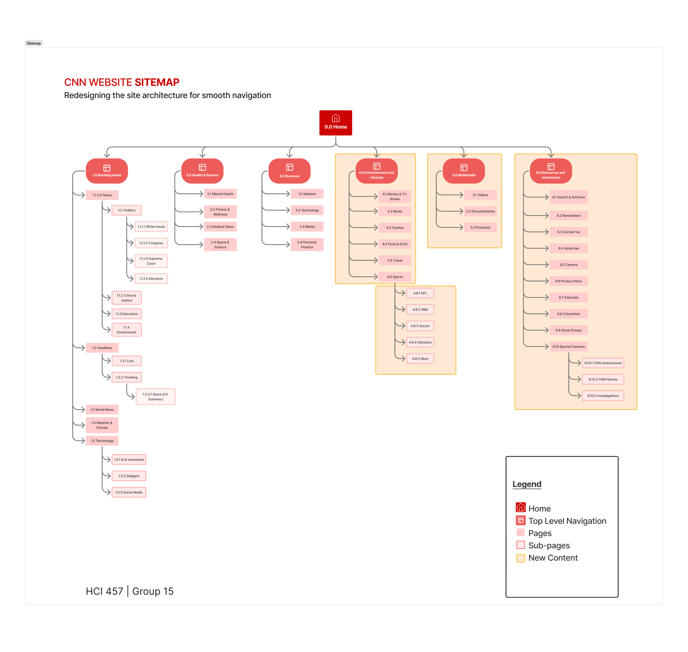
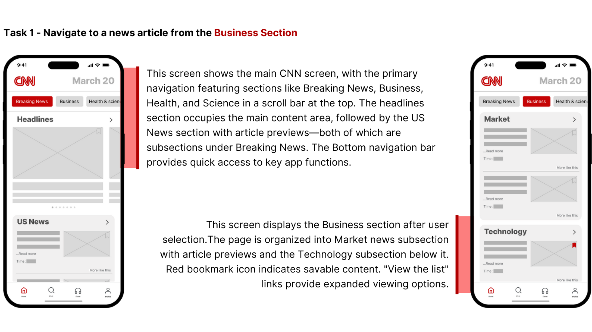
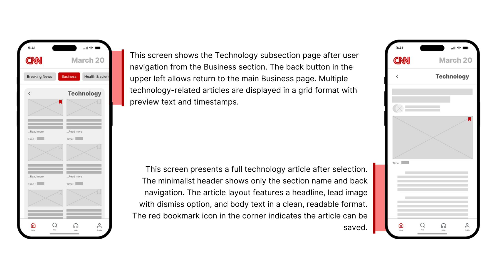
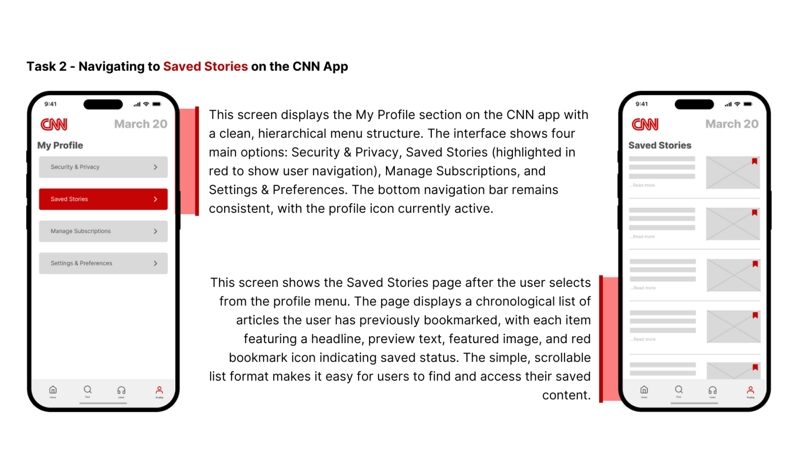
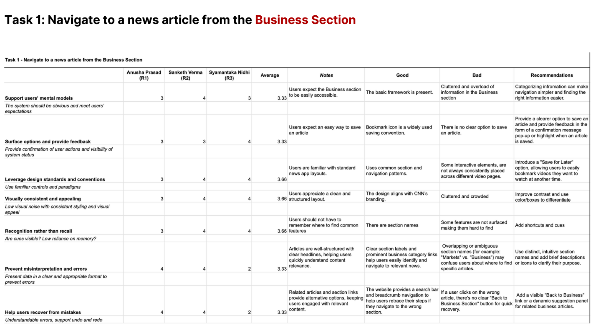
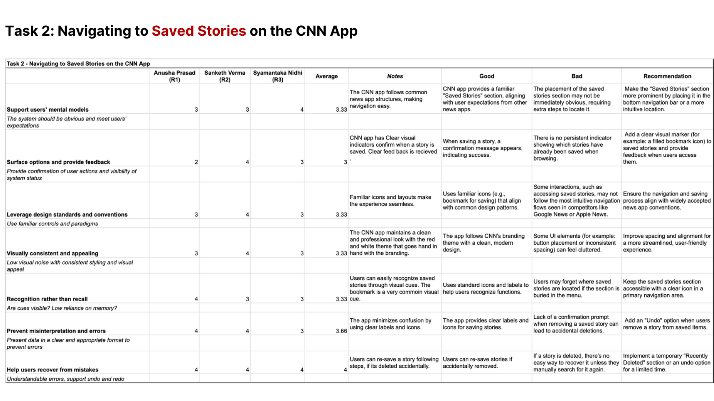
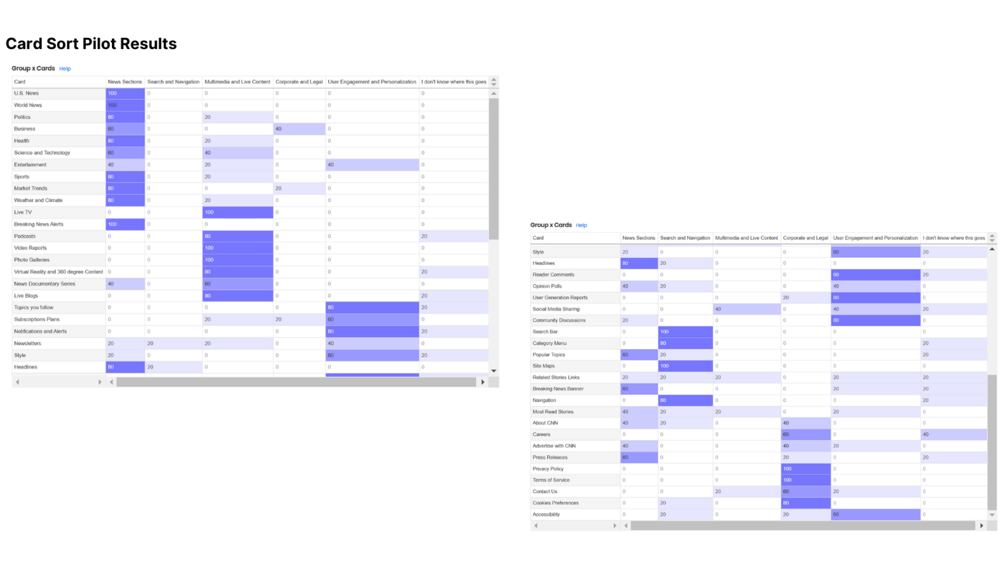
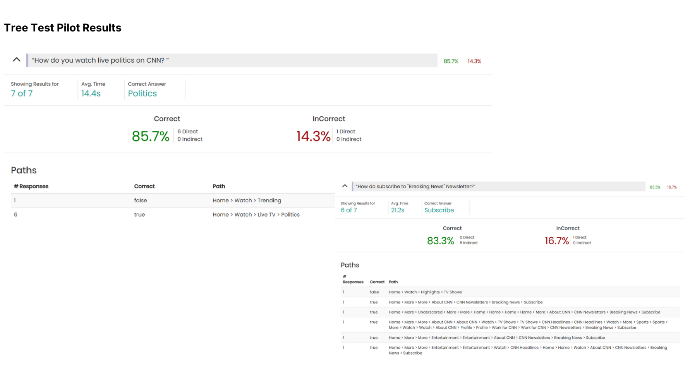

Rethinking CNN.
Restructuring a news network's information hierarchy for a generation that scans, swipes, and second-guesses every headline.

Forty top-level categories.
Nobody could find anything.
CNN's site had grown by accumulation, not architecture. Every new vertical added a tab. Every special section earned a flag. The result: cognitive overload on every page, and a navigation pattern that punished the user for not already knowing where to look.
The brief. Audit the existing IA, identify pain points through user research, and propose a restructured hierarchy validated by tree testing — without losing access to any existing content or breaking the editorial taxonomy.
Mapping the mess.
Started with a content audit and heuristic evaluation against Nielsen's 10. Scored every navigation entry against five common user goals, and surfaced the structural patterns driving confusion.
40 Top-Level Items
Counted across primary nav, mega-menu, and secondary rails. Many duplicated each other; some were vestigial campaigns from prior years.
7 Tap-Depth Average
To reach common content (e.g. local weather, election results), users averaged 7 interactions. Industry benchmark: 3–4.
12 Heuristic Violations
Most severe: inconsistent labeling (same content under multiple labels), and lack of system status during long-form scrolling.
Letting users sort the chaos.
Open card sorting with 20 participants to surface natural mental models, followed by tree testing of a proposed structure with 35 participants. Triangulated qualitative patterns from card-sort with task-success metrics from tree testing.
Users group by topic, not by section.
Participants consistently grouped "election results", "local weather", and "stock indices" together as "things I check" — not as Politics / Weather / Business. The taxonomy is editorial; the mental model is utility-first.
"Top stories" is a lifeline, not a default.
85% returned to the homepage when lost — and most could not name the section they had been in. Strong global navigation matters more than any single landing page.
Labels carry cognitive weight.
"Markets" beat "Business". "Weather" beat "Forecast". Concrete nouns won every single A/B label test. Editorial language was consistently rejected by users in favor of plain-spoken alternatives.
Accessibility was an architecture problem.
Screen-reader users were forced to traverse 40+ items in linear order. The IA wasn't just confusing visually — it was outright hostile to assistive tech, and no amount of ARIA patches the structure itself.
From forty tabs to seven.
Catalogued every URL, label, and rail
Built a single source of truth: 40 nav items + 180 sub-pages mapped, with traffic data overlaid to identify low-value entries before any restructuring.
Open card sort, 20 participants
No labels prescribed. Participants grouped 60 content items and named their own clusters. Surfaced six dominant categories that mapped poorly to the existing seven sections.
Drafted a 7-category hierarchy
News · Politics · Markets · Weather · Health · Travel · More. Every existing top-level item rolled up cleanly. Nothing lost, no orphan pages.
Validated with 35 participants, 8 tasks
Task success climbed from 47% (current IA) to 84% (proposed). Average tap-depth dropped from 7 → 3. Time-to-find cut by 58%.
Measurable improvement.
A seven-category hierarchy.

Designed against the new structure.
Three task-driven flows were prototyped against the proposed IA: navigating to a news article, drilling into a subsection, and accessing Saved Stories from the profile.



What the work taught me.
IA is the part of UX nobody sees when it works — and the only part anyone notices when it doesn't. The win wasn't a clever taxonomy. It was that users stopped narrating their failures back to me during testing. They just navigated.
— Reflection, Week 8Next steps. Validate the proposed structure with longitudinal data — synthetic tree tests catch findability issues but miss retention issues. A live A/B with traffic routing would be the next checkpoint, paired with screen-reader user testing to confirm the accessibility gains hold up in production.
Research artifacts.
Full source material referenced throughout this case study — heuristic evaluation scorecards, card-sort agreement matrices, and tree-test pilot results.



